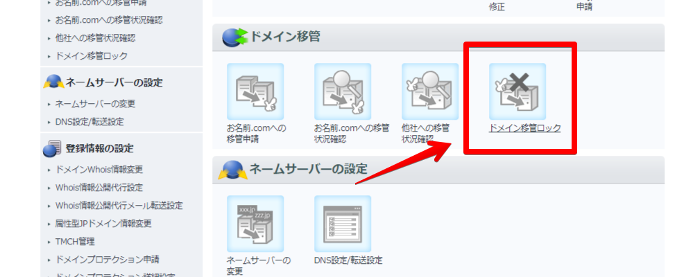
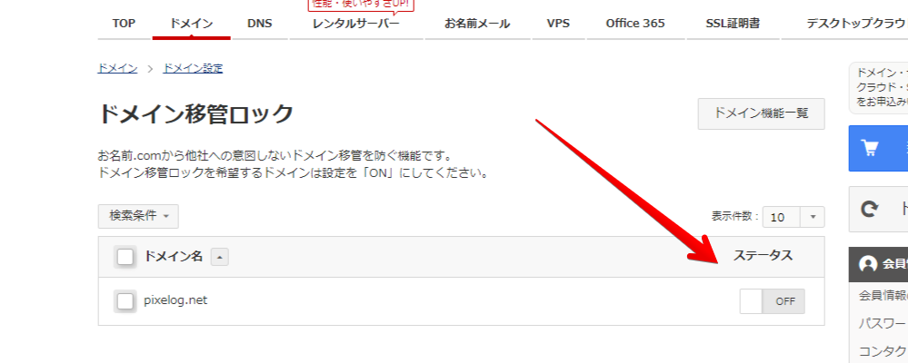
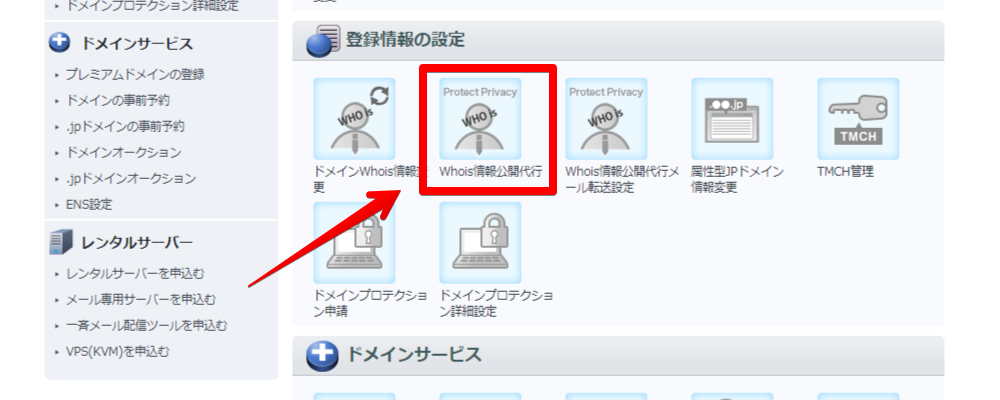
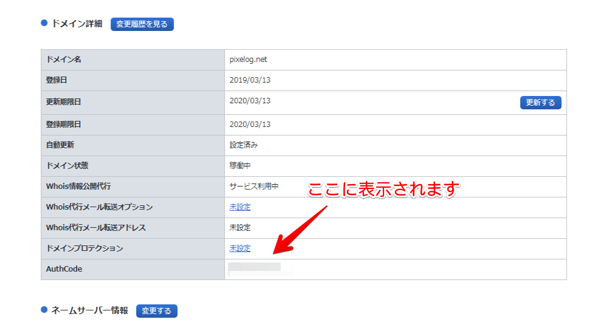
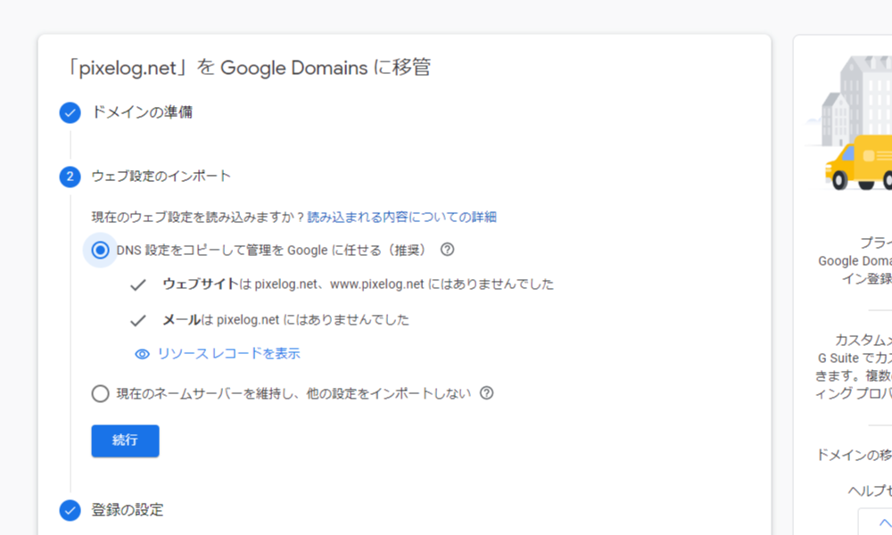

30分で完了！お名前.comのドメインをGoogle Domainsへ移管する
このブログのドメインはお名前.comで取得していたのですが、先日ドメインを更新しようとしたら、netドメインが1,480円（1年）へ値上がりしていました。
最安値でドメインを取得できるということで、お名前.comを利用していたのですが、Google Domainsは1,400円（1年）ですから、今ではGoogle Domainsの方がお得です。
また、お名前.comによる、大量のスパムメール攻撃や、使いにくい管理画面、さらにはWhois情報公開代行で、新規取得時に申し込まなければ毎年1,000円を払わせる、など、お名前.comへの不信感が自分の中で高まっていたのも相まって、移管することに決めました。
移管手順
1. ドメイン移管ロックを解除する
まず、お名前.com Naviへログインへログインし、オプション設定から、ドメイン移管ロックが設定されていないか確認しておきます。


ONになっている場合はOFFへ切り替えておきます。
2. Whois情報公開代行を解除する
ドメイン移管作業時には、承認されるまでWhois情報公開代行を解除する必要があります。同じくオプション設定から確認しておきます。

先述しましたが、お名前.comでは、ドメイン取得時に申し込んだWhois情報公開代行を解除すれば最後、二度と無料でONにすることはできません。
Google Domainsで引き続き無料で代行してもらえますから、「もうお名前.comでドメインを取ってやるものか！！」 と断固たる決意でオフにしてください。決して怯んではいけません。
3. 認証コードを取得する

次に、ドメイン一覧から移管したいドメインを選んで、ドメイン詳細の欄から「AuthCode」を控えてください。移管の申込時に必要となります。
4. Google Domainsで作業
Google Domainsのページから、移管の申込みをします。[ドメインの準備] セクションで、認証コードの欄にAuthCodeを入力します。

DNS設定はこの段階で引き継ぐことができます。
Netlify DNSを利用している場合には、「DNS設定をコピーして管理をGoogleに任せる」ではウェブサイトを認識しませんでした。お名前.com以外のDNSを利用している場合には、「現在のネームサーバーを維持し、他の設定をインポートしない」を選択しましょう。
次に進むと、名前や住所を入力する画面と、支払いの画面が続きます。
5. 移管を認証する
お名前.comから「【重要】トランスファー申請に関する確認のご連絡」という件名で、メールが届きます。記載されているURLから 1週間以内に必ず承認の手続きをしてください。
時間帯にもよると思いますが、承認メールはGoogle Domainsでの手続きを完了してから30分ほどで届き、スムーズに移管を終えることができました。
商用利用以外は不可？
支払いの画面で上部に「Google Domains のサービスは、現在お住まいの国で営利目的または商用で使用する場合にのみご利用いただけます。」という文言が表示されます。
このブログはGoogle Adsenseで収益化をしているので、営利目的に該当すると解釈して手続きを進めました。
Googleへ問い合わせたら私的利用でも許可が降りた、という例もあるようなので、気になる方は問い合わせておくことをおすすめします。
まとめ
お名前.comは国内シェア87%、ということで、ここでドメインを取得している方も多いと思いますが、Google Domainsでは、AnalyticsやSearch consoleなど主要ツールとアカウントを統合できるので便利だと思います。
ドメイン移管には、更新費用以外の手数料はかからないので、更新の際にはこの選択肢も検討してみてください。